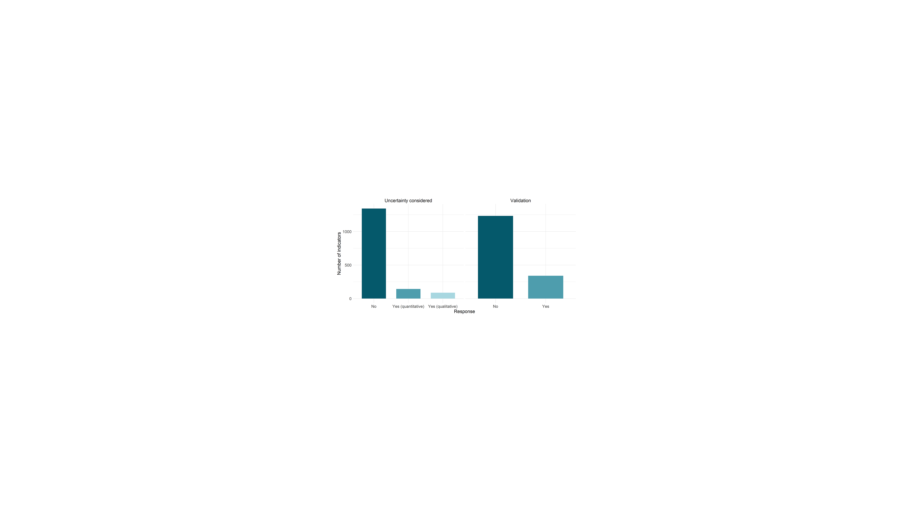
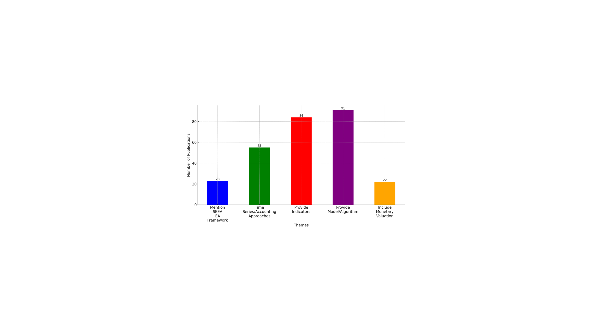
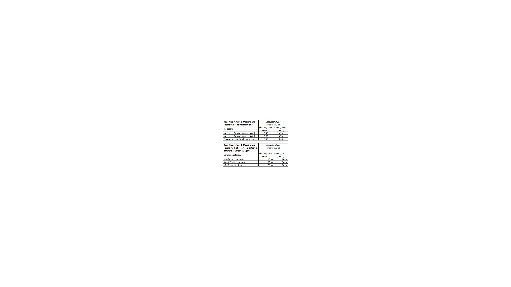
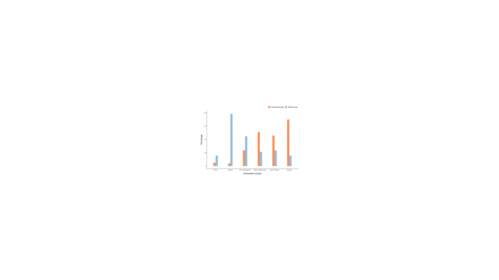

Como saber se um ecossistema e seus serviços estão melhorando?
Demonstrar melhora exige definir o atributo ecológico ou o serviço avaliado, justificar a referência e verificar a qualidade da estimativa. Um aumento de cobertura vegetal, isoladamente, não estabelece melhora de condição, de funcionamento ou de benefício às pessoas.
Restaurar áreas úmidas melhora os serviços que elas prestam?
A resposta depende do desenho do estudo. Nos três serviços priorizados de áreas úmidas, os intervalos de confiança incluem zero na análise principal.
Entender o resultado e seus limites
Os dados ainda não permitem afirmar. Reanalisamos 812 medições de 68 estudos reunidos por Meli e colegas (2014), que cobrem pesquisas de 1970 a 2010. Nos três serviços priorizados, a margem de erro da diferença entre áreas restauradas e degradadas inclui o zero. Quando entram também estudos do tipo antes e depois, as estimativas sobem e passam a ficar acima de zero. A resposta depende do tipo de estudo, e isso não prova que a restauração não funcione.
Explorar os três tipos de área
Área degradada
Condição alterada; referência de comparação para a restauração.
Área restaurada
Área com intervenção; seus indicadores são comparados aos da referência.
Área natural
Referência ecológica distinta da área degradada.
Ilustração conceitual. A aparência da vegetação não demonstra a recuperação dos serviços. As comparações estatísticas abaixo usam os dados de Meli et al. (2014).
Como ler o gráfico
O pontoÉ a diferença média estimada, em logaritmo da razão entre médias (lnRR). Zero quer dizer nenhuma diferença.
A linhaÉ o intervalo de confiança de 95%. Se ela cruza o zero, os dados são compatíveis com nenhuma diferença.
O kConta grupos independentes de estudos ou locais, não artigos. Com k pequeno, a estimativa é frágil.
Explorar a sensibilidade ao desenho do estudo
O que muda a resposta
O tipo de estudo pesa mais do que as hipóteses do modelo
Mudar a correlação assumida entre medições do mesmo local quase não altera as estimativas. Já incluir os estudos antes e depois e os pareados muda a amostra e desloca os resultados para cima. Isso mostra sensibilidade ao desenho, não que um desenho seja melhor que outro.
Restaurada × degradada, três serviços priorizados. Cada linha é um cenário da análise; a última inclui todos os desenhos de estudo.
Tabela com todos os resultados
IC: intervalo de confiança; IP: intervalo de predição aproximado. Categorias com menos de três grupos independentes não foram combinadas. As categorias compartilham observações e não podem ser somadas.
Como a análise foi feita
Usamos os efeitos e as variâncias publicados na Tabela S1 de Meli e colegas, já orientados para que valores positivos indiquem resposta favorável do indicador. A análise principal inclui só estudos do tipo controle e impacto, com efeitos finitos e variância positiva. Saíram observações ligadas a serviços com sinais opostos, porque a planilha traz um único efeito por observação.
Medições do mesmo estudo ou local formam um grupo. Dentro de cada grupo e serviço, usamos a média dos efeitos, supondo correlação 1 entre elas, a hipótese mais conservadora. Cada categoria com pelo menos três grupos foi ajustada por efeitos aleatórios (REML), com intervalos de Knapp e Hartung. As comparações com áreas degradadas e naturais foram ajustadas em separado.
O plano foi registrado depois de inspecionar a base e antes de ajustar os modelos, sem registro prévio público. O estimador foi conferido com um exemplo publicado do pacote metafor. Scripts e plano: codes/restoration_meta_analysis.py e config/restoration_meta_analysis.json.
Limites desta reanálise
Vale só para áreas úmidas e para os estudos selecionados pela revisão original. Não é uma busca atualizada nem uma estimativa para todos os ecossistemas.
Alguns indicadores aparecem em mais de um serviço. Eles medem processos e estados, não necessariamente o benefício recebido pelas pessoas.
Não houve avaliação formal de risco de viés. Viés de publicação e fatores de confusão não foram eliminados.
A planilha tem 812 observações, 68 estudos e 60 locais. O artigo relata 70 estudos; dois identificadores não aparecem na planilha e não foram preenchidos.
Como saber, na prática, se um ecossistema está melhorando?
Em quatro passos, cada um com um erro comum. Primeiro, definir o que se mede. Depois, transformar observações em estimativas, escolher com o que comparar e desenhar o acompanhamento no tempo. Abaixo, cada passo traz as perguntas que as revisões respondem e as fontes de cada resposta.
Passo 1 · O que medir
Qual é o objeto da medição?
A avaliação precisa distinguir extensão, condição, função, serviço e benefício. Essas categorias se relacionam, mas representam objetos de inferência diferentes. A escolha do indicador determina o que o estudo pode concluir.
Escolha indicadores ligados à pergunta. Vegetação, água e solo descrevem componentes diferentes. Ilustração conceitual; não representa dados observados.1.1Como distinguir extensão, condição e serviço?
Extensão é quanto existe de um ecossistema, como a área de uma mata ciliar. Condição descreve seu estado, por exemplo a composição das espécies e a estrutura da vegetação. Um serviço relaciona processos ecológicos a um benefício, como a regulação da água usada por pessoas. A revisão de contas de condição encontrou diferenças importantes entre as formas de organizar esses indicadores e de combiná-los em índices.
Na prática. Antes de escolher uma medida, escreva qual dessas perguntas ela responde. Isso ajuda a interpretar corretamente uma área mapeada, um indicador de condição ou uma estimativa de serviço.
Base: Trechos dos PDFs públicos, incluindo resumos e conclusões.
1.2Ter muitos indicadores torna a avaliação mais confiável?
A revisão de Boerema e colegas examinou 405 estudos e encontrou grande variedade de medidas para um mesmo serviço. A validação dos resultados e a quantificação da incerteza eram frequentemente limitadas. Também havia diferenças entre medir uma propriedade ecológica, uma função, o serviço, o benefício e seu valor. Essa variedade dificulta comparar avaliações que usam o mesmo nome para medidas diferentes.
Na prática. Uma medida útil tem uma definição clara, uma unidade, uma fonte e uma explicação de como foi validada. A lista de indicadores deve ajudar a responder à pergunta de gestão.
Base: PDF público, resumo e conclusão; os 405 estudos pertencem à revisão citada.
1.3O que ainda fica pouco representado nas avaliações?
A revisão publicada em 2025 sobre condição dos ecossistemas encontrou maior presença de atributos de estrutura, enquanto composição e funcionamento recebiam menos atenção. Os autores também observaram que 80% dos indicadores levantados não eram comparados com níveis ou condições de referência. Portanto, uma avaliação pode descrever uma característica e ainda deixar em aberto o que aquele valor significa para a condição do ecossistema.
Na prática. Combine dimensões que tenham relação com o objetivo do estudo e explique a referência usada para interpretar cada valor. Os 80% descrevem os indicadores daquela revisão, e não toda a literatura.

Como sabemos se o indicador foi conferido? À esquerda, as barras mostram se a incerteza foi considerada; à direita, se houve validação. Cada contagem corresponde a indicadores. O predomínio de “No” mostra a falta de verificações documentadas nesse conjunto. Uncertainty considered = incerteza considerada; Validation = validação; No = não; Yes = sim. O eixo vertical conta indicadores.Figura 4 de Nicholson Thomas et al. (2025), Ecological Indicators, CC BY 4.0.
Base: PDF público, resumo e seção de resultados sobre referências e tipos de indicador.
De onde vem. Revisões de quantificação de serviços e de contas de condição. A revisão de Maes e colegas examinou 23 relatórios públicos de contabilidade de condição. Até onde vale. A heterogeneidade de medidas limita a comparação entre estudos. Uma característica estrutural não representa automaticamente todas as dimensões de condição ou a entrega de um serviço.
Passo 2 · Como observar
Como transformar observações em estimativas?
O sensoriamento remoto observa características da superfície; estimativas de processos e serviços dependem das relações estabelecidas pelo modelo. Oferta, demanda e benefício podem exigir informações de natureza diferente.
Conecte o pixel ao campo. A imagem espacial precisa de validação e de uma escala adequada. Ilustração conceitual; não representa dados observados.2.1Um mapa de cobertura da terra informa quais serviços são prestados?
A revisão de avaliações espaciais encontrou uso frequente de mapas de cobertura da terra como entrada de modelos. Os autores apontaram que essas classes podem representar de forma grosseira as características ecológicas relevantes. A relação entre uma classe do mapa e um serviço depende das suposições adotadas e da validação.
Na prática. Ao ler um mapa de serviços, procure identificar o que foi observado diretamente, o que foi calculado e quais informações foram usadas para conferir o resultado.
2.2Por que dados sobre as pessoas também são necessários?
A revisão sobre observação da Terra propõe combinar imagens, informações socioeconômicas e modelos para relacionar oferta, demanda e benefício. A oferta descreve a capacidade de fornecer um serviço; a demanda depende de quem precisa dele; o benefício exige considerar como as pessoas efetivamente se relacionam com esse serviço.
Na prática. Um exemplo didático é a regulação da água. Para interpretar sua importância, é útil relacionar características da bacia às populações e atividades que dependem daquela água. Esse exemplo ilustra o raciocínio e não representa um resultado medido neste corpus.
2.3Existe um sensor ou modelo que resolva todas as perguntas?
A revisão de observação da Terra na contabilidade de ecossistemas, publicada em 2024, encontrou 91 publicações que apresentavam modelos ou algoritmos e 55 que tratavam de séries temporais ou abordagens de contabilidade. As categorias podem se sobrepor. A comparação descreve o esforço de pesquisa daquele levantamento; a escolha da ferramenta ainda depende da variável, da escala e da qualidade dos dados.
Na prática. Escolha o instrumento a partir da pergunta e da escala de interesse. A frequência de uso de uma ferramenta na literatura, por si só, não demonstra que ela seja a mais adequada para um caso específico.

Modelos e séries temporais aparecem com a mesma frequência? Na revisão de 2024, 91 publicações apresentavam modelos ou algoritmos e 55 tratavam de séries temporais ou abordagens de contabilidade. As categorias podem se sobrepor. A frequência de publicações não mede a precisão dos modelos. Provide Model/Algorithm = apresenta modelo ou algoritmo; Time Series/Accounting Approaches = séries temporais ou abordagens de contabilidade. SEEA EA é o sistema de contabilidade econômico-ambiental de ecossistemas.Figura 3 de Kokkoris et al. (2024), Ecosystem Services, CC BY 4.0.
Base: Figura 3 e trechos do PDF público da revisão de 2024; conclusão da revisão de drones. Categorias de publicações não são mutuamente exclusivas.
De onde vem. Revisões de avaliação espacial, observação da Terra e contabilidade de ecossistemas. A figura reproduzida da revisão de 2024 classifica publicações por temas que podem se sobrepor. Até onde vale. Frequência de uso não demonstra desempenho. A adequação de um sensor ou modelo depende da variável, da escala, dos dados disponíveis e da validação.
Passo 3 · Com o que comparar
Qual referência permite interpretar a mudança?
Linha de base observada, condição de referência e contrafactual respondem a perguntas distintas. A primeira situa uma trajetória; a segunda permite avaliar condição; o terceiro se refere ao que teria ocorrido sem uma intervenção.
Declare a referência. Comparar com uma área degradada responde a uma pergunta diferente de comparar com uma área natural. Ilustração conceitual; não representa dados observados.3.1O primeiro ano de dados é uma boa referência?
O primeiro ano disponível pode servir de linha de base para acompanhar mudanças. Para interpretar a condição ecológica, é preciso justificar por que esse ano representa uma comparação relevante. A revisão de contas de condição encontrou formas inconsistentes de usar referências. A revisão sobre estados de referência distingue comparações históricas de referências construídas com padrões contemporâneos.
Na prática. Em uma área que já estava degradada quando a coleta começou, melhorar em relação ao primeiro ano e alcançar uma condição de referência são perguntas distintas. Essa é uma interpretação didática dos conceitos discutidos pelas revisões.

Uma mudança de valor e uma mudança de classe contam a mesma história?Exemplo hipotético do artigo A figura ilustra duas formas de apresentar contas de condição: valores de abertura e fechamento, ou área em classes de condição. Os dados do desenho são hipotéticos, como informa o próprio artigo. Esta é uma ilustração conceitual, não um resultado empírico. Opening = início; Closing = fechamento; Year = ano; Good, fair e poor indicam classes de condição boa, intermediária e ruim. Os valores desta figura são hipotéticos.Figura 1 de Maes et al. (2020), One Ecosystem, CC BY 4.0.
Base: PDF público da revisão de contas; resumo indexado da revisão sobre estados de referência.
3.2Devemos tentar reproduzir exatamente o passado?
A revisão sobre variabilidade histórica apresenta o passado como uma referência útil para compreender a variação dos ecossistemas. Os autores também discutem limites dessa aplicação diante de mudanças climáticas, invasões biológicas e alterações no uso da terra. A revisão sobre estados de referência propõe considerar comparações contemporâneas quando o objetivo é orientar conservação e restauração nas condições atuais.
Na prática. Descreva a referência escolhida e as razões para usá-la. Quando houver várias referências plausíveis, mostre como a interpretação muda entre elas.
Base: PDF público sobre variabilidade histórica; resumo indexado sobre estados de referência.
3.3Melhorar depois de um projeto demonstra o efeito do projeto?
Observar uma mudança ao longo do tempo ajuda a descrever a trajetória do local. Para investigar sua causa, o desenho do estudo precisa enfrentar outras explicações possíveis. A revisão de monitoramento distingue programas que localizam mudanças, programas que acompanham sua magnitude e programas dirigidos por hipóteses para investigar causas. Estes últimos podem incluir áreas de controle e comparações planejadas.
Na prática. Ao avaliar uma intervenção, separe a comparação com o estado inicial da pergunta sobre o que teria acontecido sem a intervenção. Essa segunda pergunta exige um desenho de avaliação específico.
Base: PDF público, resumo e discussão sobre monitoramento dirigido e áreas de controle.
De onde vem. Revisões de contas de condição, variabilidade histórica, estados de referência e desenho de monitoramento. Parte da discussão de estados de referência se apoia em resumo indexado, conforme indicado nas fontes. Até onde vale. A comparação com o estado inicial não identifica, por si só, o efeito causal de uma intervenção. Referências históricas ou contemporâneas exigem justificativa ecológica e contextual.
Passo 4 · Como acompanhar
Que desenho sustenta a interpretação temporal?
Séries temporais descrevem trajetórias. A capacidade de detectar uma mudança e de atribuí-la a uma causa depende do desenho amostral, da comparabilidade das observações e do tratamento de explicações alternativas.
Repita medidas comparáveis ao longo do tempo. Uma mudança observada exige contexto para ser atribuída à intervenção. Ilustração conceitual; não representa dados observados.4.1Uma série longa de imagens já permite entender a mudança?
A revisão sobre áreas úmidas analisou 351 artigos com monitoramento de pelo menos 20 anos usando Landsat. Os autores mostram a utilidade desse arquivo para acompanhar área, estrutura e algumas funções, e recomendam reforçar a calibração e a validação com dados de campo. Uma série longa amplia o que pode ser observado, mas sua interpretação ainda depende da qualidade das medições e dos modelos.
Na prática. Ao comparar datas, confira a estação do ano, a disponibilidade de imagens e a consistência do método. Uma mudança no procedimento também pode alterar a série.

Onde o esforço de monitoramento acompanha a distribuição das áreas úmidas? A figura compara a distribuição dos 351 estudos com a distribuição da área de zonas úmidas entre domínios de temperatura. A comparação evidencia cobertura desigual. Esta revisão trata especificamente de Landsat e acompanhamento por pelo menos 20 anos. Reviewed studies = estudos revisados; Wetland area = área de zonas úmidas. As barras comparam percentuais de populações diferentes, identificadas na legenda.Figura 3 de Demarquet et al. (2023), Remote Sensing, CC BY 4.0.
Base: PDF público, resumo e conclusão; tamanho da amostra e duração pertencem à revisão citada.
4.2Como escolher o tipo de monitoramento?
A revisão sobre monitoramento em múltiplas escalas organiza três funções complementares. O monitoramento da paisagem ajuda a localizar onde e quando há mudança. O acompanhamento padronizado em campo descreve o que mudou e sua magnitude. O monitoramento dirigido por hipóteses busca investigar causas e respostas à gestão. Cada função tem pontos fortes e limites.
Na prática. Comece pela decisão que precisa ser informada. Depois combine as observações espaciais, as medições de campo e os testes necessários para responder a ela.
Base: PDF público, resumo e discussão dos três tipos de monitoramento.
4.3O que levar destas revisões para um plano de trabalho?
As revisões convergem na importância de ligar a medida à pergunta ecológica e de gestão, explicitar a referência e conferir o resultado com evidências adequadas. A revisão de modelos de regulação da água também mostra que há famílias diferentes de modelos e que a escolha depende do serviço e do uso pretendido na contabilidade. Não há uma receita única para todos os ecossistemas.
Na prática. Escreva uma sequência verificável: pergunta; ecossistema e serviço; variável e unidade; referência; fonte de dados; frequência de coleta; validação e incerteza. Essa sequência é uma proposta didática de organização baseada nas revisões, não um protocolo universal validado.
Base: Síntese interpretativa de trechos dos PDFs consultados, com limites explicitados.
De onde vem. A revisão de áreas úmidas analisou 351 artigos com séries Landsat de pelo menos 20 anos; sua busca cobriu 2009 a 1º de março de 2022. A revisão de monitoramento distingue funções espaciais, padronizadas em campo e dirigidas por hipóteses. Até onde vale. Uma série longa não elimina erros de medição nem demonstra causalidade. As lacunas geográficas desse levantamento se aplicam a seu recorte de áreas úmidas e Landsat.
Pergunta 3
O que as próprias revisões dizem que ainda falta saber?
As lacunas abaixo foram apontadas pelas revisões consultadas. As datas e os recortes acompanham cada uma. Esta coleta não mede a proporção da literatura mundial que as confirma, nem permite afirmar que nenhuma publicação posterior tenha avançado sobre elas.
Os indicadores foram validados e a incerteza foi relatada?
A revisão de 2025 registrou validação ou conferência em campo para 21% dos indicadores e consideração da incerteza para 15%. A revisão de quantificação de serviços, publicada em 2016, já apontava problemas de validação. Os trabalhos convergem ao identificar essa fragilidade, embora usem conjuntos e unidades diferentes.
O que isso significa
Há espaço para testar indicadores com evidências independentes e documentar melhor o erro e os limites das estimativas. Comparar as duas revisões não permite calcular uma tendência temporal de melhora ou piora.
Recorte: Indicadores de condição na revisão de 2025; estudos de quantificação na revisão de 2016. A revisão de 2025 selecionou publicações de 2018 a 2022.
Na revisão de 2025, 80% dos indicadores não eram comparados com níveis ou condições de referência. A revisão de contas de condição de 2020 encontrou uso pouco padronizado dessas comparações e recomendou orientações mais claras para selecionar referências e agregar indicadores.
O que isso significa
A lacuna documentada é a definição e a aplicação consistente das referências. Para uma área já degradada, a escolha entre uma referência histórica ou contemporânea continua sendo uma pergunta que exige justificativa local. Este corpus não demonstra ausência de métodos para áreas degradadas. O percentual inclui variáveis apresentadas na escala original; ele não classifica automaticamente essas medidas como incorretas.
Recorte: Indicadores e contas de condição dos conjuntos revisados; conceitos de estados de referência. A revisão de 2025 selecionou publicações de 2018 a 2022.
A composição e o funcionamento recebem atenção suficiente?
A revisão de 2025 encontrou maior presença de atributos estruturais, enquanto características de composição e funcionamento eram menos exploradas. Um levantamento da vegetação, por exemplo, pode representar apenas parte da condição que se pretende avaliar.
O que isso significa
A prioridade sugerida pelos resultados é investigar como combinar dimensões relevantes de condição, sem tratar uma medida de estrutura como resposta completa sobre funções ou serviços. Isso não demonstra que toda avaliação estrutural seja inadequada.
Recorte: Aplicações de indicadores espacialmente explícitos de condição no conjunto revisado. A revisão de 2025 selecionou publicações de 2018 a 2022.
Onde e em que ambientes ainda faltam observações de longo prazo?
A revisão de Landsat e áreas úmidas identificou grandes áreas sem acompanhamento de longo prazo, especialmente na América do Sul, África Equatorial, Oceania e Rússia. Na comparação por domínios de temperatura, ambientes boreais, polares e temperados frios tinham menor representação relativa à área de zonas úmidas. Muitos estudos tropicais se concentravam em florestas de mangue. Em outro recorte, a revisão de indicadores de condição de 2025 encontrou concentração em florestas e menor presença de alguns outros tipos de ecossistema.
O que isso significa
Os vazios mudam conforme o ambiente e o tipo de serviço. A evidência sustenta ampliar a cobertura nesses recortes e melhorar o estudo de funções, com calibração e validação de campo. Ela não sustenta uma afirmação única de que todos os ambientes tropicais ou todo o Norte global estejam menos estudados.
Recorte: 351 artigos com séries de pelo menos 20 anos utilizando Landsat; não toda a literatura de ecossistemas. A figura de tipos de ecossistema pertence a um conjunto diferente: aplicações de indicadores de condição na revisão de 2025. A revisão de 2025 selecionou publicações de 2018 a 2022. A busca dessa revisão cobriu publicações de 2009 até 1º de março de 2022.
Há também limites da nossa própria coleta: acesso apenas ao resumo de alguns artigos, ausência de texto completo para outros e busca limitada por fontes e quantidade de resultados. Esses limites dificultam a síntese, mas não constituem, por si só, lacunas da literatura.
As fontes
De onde vêm as evidências desta página
Reunimos 121 revisões com DOI e pelo menos 20 citações, triadas a partir de 1.212 registros. É um conjunto priorizado por citações, não uma revisão sistemática completa.
121revisões no conjunto
29com PDF público baixado
92só com metadados, para busca manual
1.212registros triados
Medição71
Métodos espaciais26
Linha de base12
Monitoramento12
Revisão
Ano
Tema
Citações
Acesso
Limites da coleta
A busca no Crossref ficou limitada às primeiras páginas de resultados e não é exaustiva.
Não houve busca paga no OpenAlex; só consultas gratuitas de metadados por DOI.
O Unpaywall não foi consultado, por falta de e-mail de contato. Os acessos abertos vêm do OpenAlex.
Web of Science e Scopus não foram pesquisados.
Tipo de publicação, revisão por pares e tema principal foram triados pelos metadados e ainda precisam de leitura do texto.
Itens sem DOI e revisões que os metadados não identificam podem ter ficado de fora.
A ordem por citações vale dentro do conjunto coletado, não para toda a literatura.